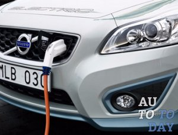
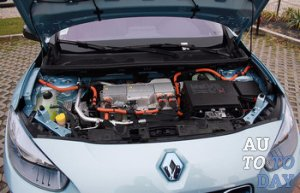
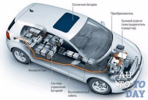
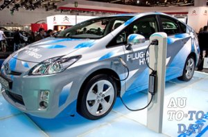
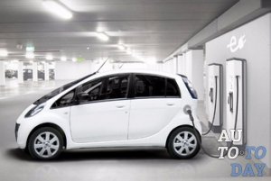
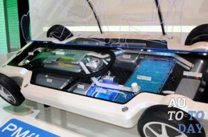
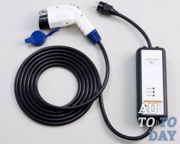
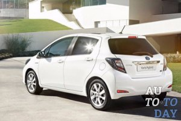
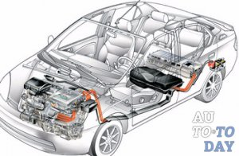

Краткий обзор электромобилей.

1. Электромобили – история развития
Для начала разберемся, что ж такое электромобиль. Что бы не придумывать заумных терминов, скажем просто: это обычный автомобиль, у которого вместо двигателя внутреннего сгорания, электрический двигатель, получающий энергию от автономного источника (топливных элементов или аккумуляторов). Данное устройство не стоит путать с транспортными средствами, имеющими электрическую передачу, тролейбусами или трамваями, так как принцип его действия несколько иной, но об этом чуть позже.

По сути, это и был первый электромобиль, хотя некоторые ученные с этим не согласны, утверждая, что в период с 1830 до 1840 года, уже было представлено как минимум три похожих конструкции: первая Робертом Андерсоном, вторая – Робертом Девидсоном и третья – Томасом Девенпортом. Все они могли передвигаться со скоростью до 4 км/час, имели большой вес и были крайне неудобны в использовании. Ах если бы ученные тех времен, могли додуматься до изобретения современных аккумуляторных батарей, дело пошло бы гораздо быстрее. Но они встали на правильный путь, положив начало этого процесса!
Прошло каких-то 25 лет и в 1865 году француз Гастон Планте представил миру предка известного сегодня автомобильного аккумулятора. Конечно, он был далек от совершенства и не подходил для практического применения, однако, принцип его работы, дал толчок действиям других изобретателей. И вот, к началу 80-х годов ХIX века, начали создаваться достаточно емкие и сравнительно легкие аккумуляторы, а главное – такие устройства можно было заряжать. Это событие создало настоящий бум в мире электромобилестроения, а период с конца XIX до начала ХХ века, считают «золотым веком» развития электромобиля. Самое парадоксальное, что на фоне всех этих событий практически никто не верил в возможность использования двигателя внутреннего сгорания. Среднестатистическое транспортное средство того времени, имеющие электрическое питание, могло развивать скорость до 30 км/час, весь день ездило без подзарядки, а электромотор бесшумно работал в любых условиях, не требуя переключения передач.

А Вы знаете, кому принадлежат первые рекорды скорости? Правильно, и тут не обошлось без электрических машинок. В 1895 году, впервые провели официальные «гонки», в которых победил электромобиль француза Шарля Жанто, установив рекорд скорости - 63 км/час, а уже в 1899 году, неизвестная ранее новинка, не только достигла 100-километрового скоростного рубежа, но и превысила его. В этом случае, разогнавшись до 105 км/час, отличился электромобиль бельгийца Камилема Иенатци.
В том же 1895 году, русский инженер-изобретатель Ипполит Романов, создал первый электрический омнибус, вмещающий в себя 17 пассажиров. Идея конструкции машины, была позаимствована у английских кебов (извозчик размещался позади пассажиров, на высоких козлах). Такой экипаж мог быть двух- или четырехместным, а диаметр передних колес, превосходил задние. Первый в мире электромобиль использовал свинцовый аккумулятор системы Бари, который имел 36 вольтовых столбов и требовал подзарядки каждые 64 километра (60 верст). Разработку данного экипажа, переняли у американских моделей фирмы «Моррис-Салом», выпускающей автомобили с 1898 года.

Однако, сторонники применения двигателей внутреннего сгорания не сидели сложа руки и занимались активным усовершенствованием своей идеи. Со временем, они смогли добиться желаемого результата – бензиновые двигатели стали вытеснять электрические. А помогло им в этом, сразу несколько факторов:
- во-первых были открыты богатые месторождения нефти, что быстро привело к массовому изготовлению дешевого бензина;
- во-вторых, началось строительство новых дорог и развитие сети старых, а это позволило совершать дальние поездки, для чего электромобили не были приспособлены; в-третьих, из-за сравнительно большого веса и намного меньших скоростных возможностей, интерес общественности к электромобилям заметно упал, а все внимание переключилось на более выгодные, в этом плане, автомобили.
Однако, главным фактором резкой популярности бензиновых двигателей, стала более совершена конструкция транспортного средства, которая, к тому же, обходилась значительно дешевле. Таким образом, к 1920 году, среди всех транспортных средств, электрические машины занимали только 1%, а в 1930 - их и вовсе перестали выпускать.

2. Как работает электромобиль
Как мы только что отметили, бензиновые и электрические машины, внешне ничем не отличаются, а значит при встрече с таким «чудом техники», Вы можете и не понять, какой именно автомобиль (или лучше сказать, электромобиль) находится перед Вами. Единственной особенностью, выдающей электрическое транспортное средство в процессе движения, есть практически полное отсутствие звука работающего двигателя. Однако, при всей внешней схожести, принцип работы этих двух видов, существенно отличается. Начнем с того, что под капотом электромобиля вместо двигателя внутреннего сгорания находится электрический агрегат, получающий питание от аккумуляторных батарей. Они выполняют роль своеобразного «топливного бака» и обеспечивают электромотор необходимой рабочей энергией.

Частота подаваемых импульсов, равна 15000 раз в секунду, а учитывая, что человеческий орган слуха не способен ее улавливать, работа контроллера и электромотора остается для нас практически бесшумной.
Основой деятельности электрического двигателя является принцип электромагнитной индукции, который связывают с появлением электродвижущей силы в замкнутом контуре при изменении магнитного потока. Двигатель электромобилей переводит электрическую энергию в необходимую механическую, при чем коэффициент его полезного действия составляет 85-95%. Такая идея далеко не новая, а в основе любого подобного мотора лежит эффект, обнаруженный Майклом Фарадейем еще в 1921 году: при взаимодействии магнитного поля и электрического тока – возникает непрерывное вращение.
Как видите, принцип работы электромотора значительно отличается от ДВС, однако, что касается остальных составляющих конструкции электромобиля, то они практически такие же как и в бензиновом варианте: есть коробка передач, подушки безопасности, тормозная система и т.д.
3. Преимущества и недостатки электромобиля

Конструкция электромобилей значительно проще: нужно всего лишь замкнуть электрическую цепь и контролировать уровень ее напряжения, при чем сложные механизмы, типа карбюраторов, инжекторов или фильтров полностью отсутствую, а это значит, что такие машины не нуждаются в частом и дорогом обслуживании. Бесспорным преимуществом электрокаров есть и отсутствие вредных выхлопных газов. Конечно, для зарядки аккумулятора требуется сжигать уголь, мазут или газ, но в общем счете, с точки зрения экологической ситуации, все это не так катастрофично, как эксплуатация беспрерывно пыхтящего автомобиля. К тому же, КПД электромоторов составляет 90-95%, что несомненно выше чем у ДВС с их 40-60%.
Еще одним фактом, выставляющем электромобили в выгодном свете, есть их бесшумный режим работы. Если для жителей маленьких городков, подобное преимущество не существенно, то для населения мегаполисов – это более чем весомый аргумент, ведь постоянный шум на улицах, хорошо слышен и в квартирах.
Тем не менее, нельзя сказать, что электрические машинки полностью «безгрешны». Самым главным их недостатком является ограниченность заряда батареи, запаса которой (без подзарядки) на длительные поездки не хватит. К тому же, они занимают слишком много места в салоне машины, а строк их эксплуатации не отличается долговечностью – через каждых два-три года детали придется менять. Учитывая, что стоят аккумуляторы немало, становится понятным, почему большинство автомобилистов считает их главным слабым звеном электрокаров. Еще одним минусом, эксперты называют низкие динамические характеристики, исходя из которых, электрические моторы до сих пор уступают бензиновым собратьям.

Однако, все описанные недостатки – временное явление. Технический прогресс не стоит на месте и в скором времени, мы уже не вспомним о теперешних проблемах электромобилей, что в будущем позволит таким машинам стать еще популярнее.
4. Гибридные модели автомобилей
Вот, кажется, только поняли, что из себя представляет электромобиль, как тут еще одна диковинка – гибридное транспортное средство. На самом деле, здесь также нет ничего сложного, а название говорит само за себя - это автомобиль и электромобиль в одном флаконе. Другими словами, гибридное авто для своей работы использует более одного источника энергии. В современном мире, такими источниками, чаще всего, есть совместное использование электродвигателя и двигателя внутреннего сгорания. Подобное решение ограждает ДВС от работы при малых нагрузках, а также позволяет реализовать рекуперацию кинетической энергии, повышая тем самым топливную эффективность всей установки. Вторым, существующим видом гибридных автомобилей есть машины, в которых ДВС совмещен с моторами, работающими на сжатом воздухе.

На сегодняшний день, самым популярным в мире гибридным транспортным средством, является Toyota Prius. На рынки Украины, данная модель поступила в продажу лишь в апреле 2010 года, в то время как до осени того же года, ее владельцами по всему миру, стали более 2 млн. человек (мировой дебют состоялся в 1997 году). Сегодня, можно приобрести уже третье поколение Prius, но и это еще не конец: недавно стартовали продажи подзаряжаемой версии гибрида и версии с более вместительным багажником.
По материалам сайта : https://auto.today/